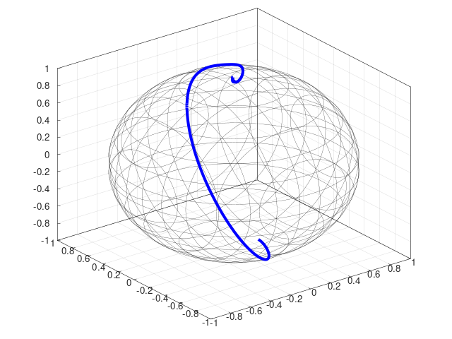
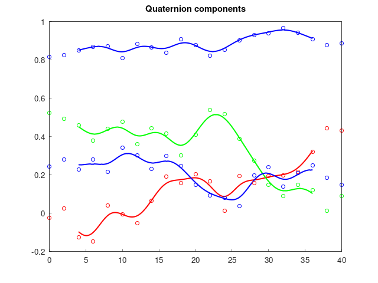

 
- Requirements: C++20, Eigen 3.4
- Documentation
- Compatible with: autodiff, boost::numeric::odeint, Ceres, ROS
- Written in an extensible functional programming style
In robotics it is often convenient to work in non-Euclidean manifolds. Lie groups are a class of manifolds that are easy to work with due to their symmetries, and that are also good models for many robotic systems. This header-only C++20 library facilitates leveraging Lie theory in robotics software, by enabling:
- Algebraic manipulation
- Automatic differentiation
- Interpolation (right figure shows a B-spline of order 5 on smooth::SO3, see
examples/bspline.cpp) - Numerical integration (left figure shows the solution of an ODE on
, see
examples/odeint.cpp) - Optimization
The following common Lie groups are implemented:
- smooth::SO2: two-dimensional rotations with complex number
memory representation
- smooth::SO3: three-dimensional rotations with quaternion
memory representation
- smooth::SE2: two-dimensional rigid motions
- smooth::SE3: three-dimensional rigid motions
- smooth::C1: complex numbers (excluding zero) under multiplication
- smooth::Galilei: the Galilean group. It includes SE_2(3) as a special case.
- smooth::SE_K_3: generalization of SE3 with multiple translations
- A smooth::Bundle type to treat Lie group products
as a single Lie group. The Bundle type also supports regular Eigen vectors as
components
- Lie group interfaces for Eigen vectors and builtin scalars
Getting started
Download and Build
Clone the repository and install it
Alternatively, if using ROS or ROS2 just clone smooth into a catkin/colcon workspace source folder and build the workspace with a compiler that supports C++20. Example with colcon:
Use with cmake
To utilize smooth in your own project, include something along these lines in your CMakeLists.txt
Explore the API
Check out the Documentation and the examples.
Using the library
Algebraic Manipulations
Concepts and Types
These C++20 concepts are implemented in concepts.hpp.
Manifold: type for whichrplus(geodesic addition) andrminus(geodesic subtraction) are defined. Examples:- All
LieGrouptypes std::vector<Manifold>is a Manifold defined inmanifold_vector.hpp—it facilitates e.g. optimization and differentiation w.r.t. a dynamic number ofManifoldsstd::variant<Manifold ...>is a Manifold defined inmanifold_variant.hpp. Usingstd::vector<std::variant<Manifold...>>can be convenient when optimizing over variables with different parameterizations.
- All
LieGroup: type for which Lie group operations (exp,log,Ad, etc...) are defined. Examples:- All
NativeLieGrouptypes - Fixed-size Eigen vectors (e.g.
Eigen::Vector3d) - Dynamic-size Eigen vectors (e.g.
Eigen::VectorXd) - Built-in scalars (e.g.
double)
- All
NativeLieGroup: type that implements the Lie group operations as class methods. Examples:smooth::SO3<float>smooth::C1<double>smooth::Bundle<NativeLieGroup | Eigen::Matrix<Scalar, N, 1> ...>
Both Manifold and LieGroup are defined via external type traits (traits::man and traits::lie) that can be specialized in order to define Manifold or LieGroup interfaces for third-party types.
Algorithms
Tangent space differentiation
Available for Manifold types, see diff.hpp.
Supported techniques (see smooth::diff::Type):
- Numerical derivatives (default)
- Automatic differentiation using
autodiff(must #include <smooth/compat/autodiff.hpp>) - Automatic differentiation using Ceres 2.x (must #include <smooth/compat/ceres.hpp>)
Example: calculate for i=1, 2
Non-linear least squares optimization
Available for Manifold types, see optim.hpp.
The minimize() function implements a Levenberg-Marquardt trust-region procedure to find a local minimum. All derivatives and computations are done in the tangent space as opposed to e.g. Ceres which uses derivatives w.r.t. the parameterization.
A sparse solver is implemented, but it is currently only available when analytical derivatives are provided.
Example: Calculate
Piecewise polynomial curve evaluation and fitting
Available for LieGroup types, see spline/spline.hpp.
These splines are piecewise defined via Bernstein polynomials and pass through the control points. See examples/spline_fit.cpp for usage.
B-spline evaluation and fitting
Available for LieGroup types, see spline/bspline.hpp.
The B-spline basis functions have local support, A B-spline generally does not pass through its control points. See examples/spline_fit.cpp and examples/bspline.cpp for usage.
Compatibility
Utility headers for interfacing with adjacent software are included.
- compat/autodiff.hpp: Use the autodiff library as a back-end for automatic differentiation
- compat/ceres.hpp: Local parameterization for Ceres on-manifold optimization, and use the Ceres automatic differentiation as a back-end
- compat/odeint.hpp: Numerical integration using
boost::odeint - compat/ros.hpp: Memory mapping of ROS/ROS2 message types
Related Projects
- smooth_feedback utilizes
smoothfor control and estimation on Lie groups.
Two projects that have served as inspiration for smooth are manif—which also has an accompanying paper that is a great practical introduction to Lie theory—and Sophus. Certain design decisions are different in smooth: derivatives are with respect to tangent elements as in manif, but the tangent types are Eigen vectors like in Sophus. This library also includes the Bundle type which facilitates control and estimation tasks, as well as utilities such as differentiation, optimization, and splines. Finally smooth is written in C++20 and leverages modern features such as concepts and ranges.